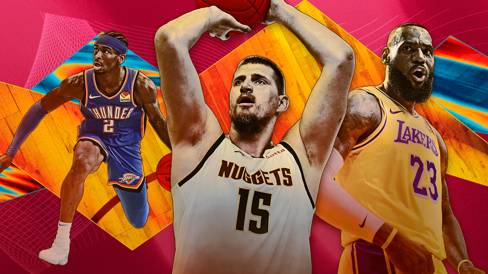
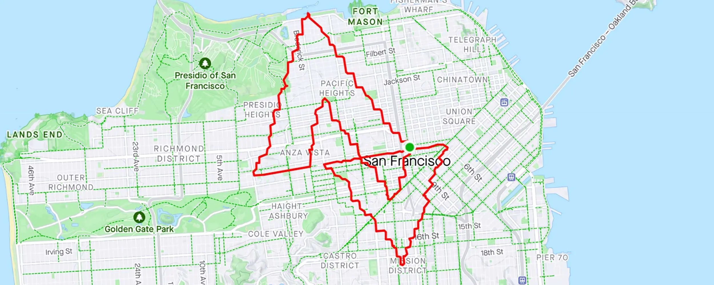

Formé en Data Marketing (Université Panthéon-Sorbonne) et diplômé du bootcamp Data Analytics du Wagon,
je m'intéresse à la donnée sous toutes ses formes – exploration, modélisation et visualisation – avec une appétence forte pour le sport et les projets à impact.

Création d’un outil de scouting data-driven pour le club de Serie A Como 1907.
Scraping (R), nettoyage (SQL/DBT), scoring par poste et dashboard Looker Studio.
Modélisation prédictive des résultats NBA à partir des statistiques des équipes.
Plusieurs modèles de machine learning testés et comparés avec R.

Exploration de deux problématiques business liées à l'immobilier résidentiel américain.
Nettoyage, visualisation et analyse via Python (Pandas, Seaborn).

Projets personnels d’analyse de mes données d'entraînement : charge, fréquence, performance.
Langages : R & Python. Visualisations dans Tableau.